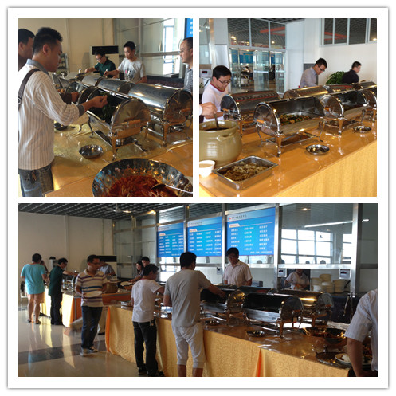

【供稿/侯海燕】“烧白又出来了，快去整两块”，9月26日中午，某老师正兴奋地向同桌的人宣传着。
新学期伊始，合川校区教职工餐厅便以全新的面貌亮相。运行一个月来，得到了教职工的一致好评。
中午十二点是用餐高峰期，但是餐厅里排队就餐的队伍井然有序。新教职工餐厅采用自选模式，提供品种多样、方便快捷、质优价廉的自选餐饮服务，老师们可以自己决定饭菜的品种、数量等。“菜品丰富，可选择的余地大，味道也好，想吃多少就打多少，最关键还实惠。”新入职的张国君老师满足地说道，“不过，秋冬天来了，喉咙比较干，希望以后每周能上一次藕汤或者萝卜汤。”

“以前我们还经常跑外边小吃街去吃，味道虽然好但是也担心卫生问题，现在就在食堂吃，味道可以，也干净。”图书馆胡耿老师如是说。“酸菜鱼、咖喱鸡、烧白、土豆泥等等，每天中午都有这么多好吃的，样样都想吃，我都担心我会长胖呢。”一位女老师激动地说。“以前是我们做什么老师吃什么，现在我们转变服务理念，老师们想吃什么我们就做什么。”教职工餐厅的厨师这样说道。正是这份暖心的饭菜及服务，留住了老师们的胃，更留住了老师们的心。
在餐厅吃饭，还能经常看到校领导的身影。“我们的校领导一直和教师一样在教职工食堂吃饭，并且坚持排队。有一次我在吃中饭时，一抬头发现刘建生书记就坐在我对面，他问我饭菜是不是合口味，生活上是否还有什么需要解决的问题”，某老师说，“感觉这个餐厅已经成了校领导了解校情民意的信息中心了。”
群众路线就是要把群众的利益放在心上，一切从师生的需要出发，以前老师们对用餐问题反映强烈，学校下决心整改。为了餐厅的顺利开业，学校相关职能部门的干部职工放弃了暑假休息时间，克服天气炎热、时间紧等困难，在开学前顺利完成了改造工作。
据了解，学校华岩校区教职工餐厅改造工程也在实施中，有望于国庆假期后开业。
【责编/唐晓利】